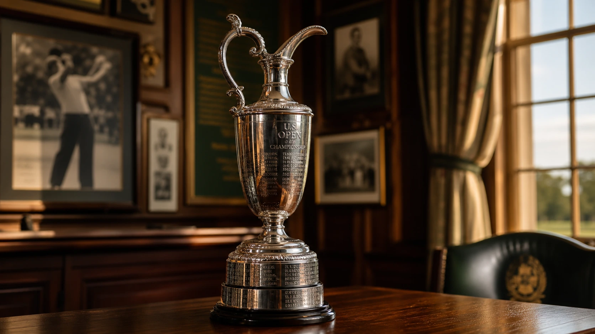

Quick answer: The men's U.S. Open has been won by golf's greatest champions since its inaugural tournament in 1895. The most recent winner is Wyndham Clark, who claimed his second U.S. Open title in 2026 at Shinnecock Hills. Jack Nicklaus, Ben Hogan, Bobby Jones, and Willie Anderson share the all-time record with four victories each.
New to the majors? Start with golf's major championships explained for the full context on where the U.S. Open fits.

Dating back to the late 19th century, the U.S. Open represents the ultimate test of nerve and physical execution in professional golf. Known for its punishing rough, lightning-fast greens, and demanding course setups, only the most resilient players hoist the historic silver trophy.
Who Won the Most Recent U.S. Open?
The most recent champion is Wyndham Clark, who clinched his second U.S. Open title on June 21, 2026, at Shinnecock Hills. In a wire-to-wire performance, Clark finished at 4 under par to hold off a hard-charging Sam Burns by one shot. Clark's victory joined a lineage of dramatic finishes at the event. In 2025, J.J. Spaun secured his first major title at Oakmont Country Club with a dramatic 64-foot birdie putt on the final hole. In 2024, Bryson DeChambeau won his second U.S. Open in a thrilling Sunday duel at Pinehurst Resort.
Multiple U.S. Open Winners
Winning a U.S. Open is a career-defining achievement. Winning it multiple times cements a player's legacy among the absolute giants of the game. Throughout history, 24 players have recorded multiple U.S. Open victories:
- 4 wins: Willie Anderson, Bobby Jones, Ben Hogan, Jack Nicklaus
- 3 wins: Hale Irwin, Tiger Woods
- 2 wins: Alex Smith, John McDermott, Walter Hagen, Gene Sarazen, Ralph Guldahl, Cary Middlecoff, Julius Boros, Billy Casper, Lee Trevino, Andy North, Curtis Strange, Ernie Els, Lee Janzen, Payne Stewart, Brooks Koepka, Bryson DeChambeau, Wyndham Clark.
Amateur U.S. Open Champions
While the modern game is dominated by professionals, the early decades of the U.S. Open saw legendary amateurs match and beat the best pros in the world. Only five amateurs have ever won the U.S. Open, with none achieving the feat since 1933:
- Bobby Jones (4 wins): The legendary amateur won in 1923, 1926, 1929, and 1930.
- Francis Ouimet (1913): His historic playoff win over Harry Vardon and Ted Ray at The Country Club put golf on the front pages in America.
- Jerome Travers (1915): Claimed the title at Baltusrol.
- Chick Evans (1916): Won wire-to-wire at Minikahda Club.
- Johnny Goodman (1933): The last amateur to win the U.S. Open, sealing his victory at North Shore Golf Club.
Historic U.S. Open Records
The U.S. Open has produced some of the most remarkable records in golf history. Here are the milestone achievements that define the tournament:
- Most Victories: 4 (Willie Anderson, Bobby Jones, Ben Hogan, Jack Nicklaus).
- Youngest Winner: John McDermott in 1911 (19 years, 10 months, 14 days).
- Oldest Winner: Hale Irwin in 1990 (45 years, 15 days).
- Largest Margin of Victory: 15 strokes, set by Tiger Woods during his historic performance at Pebble Beach in 2000.
- Lowest 72-Hole Score: 268, shot by Rory McIlroy at Congressional Country Club in 2011.
Complete Year-by-Year Winners List
Below is the complete list of all U.S. Open champions since the inaugural event at Newport Golf Club in 1895. Use this year-by-year record to trace the champions of every era.
| Year | Champion |
|---|---|
| 2026 | Wyndham Clark |
| 2025 | J.J. Spaun |
| 2024 | Bryson DeChambeau |
| 2023 | Wyndham Clark |
| 2022 | Matt Fitzpatrick |
| 2021 | Jon Rahm |
| 2020 | Bryson DeChambeau |
| 2019 | Gary Woodland |
| 2018 | Brooks Koepka |
| 2017 | Brooks Koepka |
| 2016 | Dustin Johnson |
| 2015 | Jordan Spieth |
| 2014 | Martin Kaymer |
| 2013 | Justin Rose |
| 2012 | Webb Simpson |
| 2011 | Rory McIlroy |
| 2010 | Graeme McDowell |
| 2009 | Lucas Glover |
| 2008 | Tiger Woods |
| 2007 | Ángel Cabrera |
| 2006 | Geoff Ogilvy |
| 2005 | Michael Campbell |
| 2004 | Retief Goosen |
| 2003 | Jim Furyk |
| 2002 | Tiger Woods |
| 2001 | Retief Goosen |
| 2000 | Tiger Woods |
| 1999 | Payne Stewart |
| 1998 | Lee Janzen |
| 1997 | Ernie Els |
| 1996 | Steve Jones |
| 1995 | Corey Pavin |
| 1994 | Ernie Els |
| 1993 | Lee Janzen |
| 1992 | Tom Kite |
| 1991 | Payne Stewart |
| 1990 | Hale Irwin |
| 1989 | Curtis Strange |
| 1988 | Curtis Strange |
| 1987 | Scott Simpson |
| 1986 | Raymond Floyd |
| 1985 | Andy North |
| 1984 | Fuzzy Zoeller |
| 1983 | Larry Nelson |
| 1982 | Tom Watson |
| 1981 | David Graham |
| 1980 | Jack Nicklaus |
| 1979 | Hale Irwin |
| 1978 | Andy North |
| 1977 | Hubert Green |
| 1976 | Jerry Pate |
| 1975 | Lou Graham |
| 1974 | Hale Irwin |
| 1973 | Johnny Miller |
| 1972 | Jack Nicklaus |
| 1971 | Lee Trevino |
| 1970 | Tony Jacklin |
| 1969 | Orville Moody |
| 1968 | Lee Trevino |
| 1967 | Jack Nicklaus |
| 1966 | Billy Casper |
| 1965 | Gary Player |
| 1964 | Ken Venturi |
| 1963 | Julius Boros |
| 1962 | Jack Nicklaus |
| 1961 | Gene Littler |
| 1960 | Arnold Palmer |
| 1959 | Billy Casper |
| 1958 | Tommy Bolt |
| 1957 | Dick Mayer |
| 1956 | Cary Middlecoff |
| 1955 | Jack Fleck |
| 1954 | Ed Furgol |
| 1953 | Ben Hogan |
| 1952 | Julius Boros |
| 1951 | Ben Hogan |
| 1950 | Ben Hogan |
| 1949 | Cary Middlecoff |
| 1948 | Ben Hogan |
| 1947 | Lew Worsham |
| 1946 | Lloyd Mangrum |
| 1942–1945 | No tournament (World War II) |
| 1941 | Craig Wood |
| 1940 | Lawson Little |
| 1939 | Byron Nelson |
| 1938 | Ralph Guldahl |
| 1937 | Ralph Guldahl |
| 1936 | Tony Manero |
| 1935 | Sam Parks Jr. |
| 1934 | Olin Dutra |
| 1933 | Johnny Goodman Amateur |
| 1932 | Gene Sarazen |
| 1931 | Billy Burke |
| 1930 | Bobby Jones Amateur |
| 1929 | Bobby Jones Amateur |
| 1928 | Johnny Farrell |
| 1927 | Tommy Armour |
| 1926 | Bobby Jones Amateur |
| 1925 | Willie Macfarlane |
| 1924 | Cyril Walker |
| 1923 | Bobby Jones Amateur |
| 1922 | Gene Sarazen |
| 1921 | Jim Barnes |
| 1920 | Ted Ray |
| 1919 | Walter Hagen |
| 1917–1918 | No tournament (World War I) |
| 1916 | Chick Evans Amateur |
| 1915 | Jerome Travers Amateur |
| 1914 | Walter Hagen |
| 1913 | Francis Ouimet Amateur |
| 1912 | John McDermott |
| 1911 | John McDermott |
| 1910 | Alex Smith |
| 1909 | George Sargent |
| 1908 | Fred McLeod |
| 1907 | Alec Ross |
| 1906 | Alex Smith |
| 1905 | Willie Anderson |
| 1904 | Willie Anderson |
| 1903 | Willie Anderson |
| 1902 | Laurie Auchterlonie |
| 1901 | Willie Anderson |
| 1900 | Harry Vardon |
| 1899 | Willie Smith |
| 1898 | Fred Herd |
| 1897 | Joe Lloyd |
| 1896 | James Foulis |
| 1895 | Horace Rawlins |
Frequently Asked Questions
Who won the 2026 U.S. Open?
Wyndham Clark won the 2026 U.S. Open at Shinnecock Hills, finishing at 4 under par to secure his second U.S. Open title in a wire-to-wire victory.
Who has won the most U.S. Opens?
Willie Anderson, Bobby Jones, Ben Hogan, and Jack Nicklaus share the record for the most U.S. Open victories, with four titles each.
Has any amateur won the U.S. Open recently?
No. Johnny Goodman in 1933 was the last amateur golfer to win the U.S. Open. In total, only five amateurs have ever won the tournament.
What is the largest margin of victory in U.S. Open history?
The largest margin of victory is 15 strokes, set by Tiger Woods in his historic win at Pebble Beach in 2000.